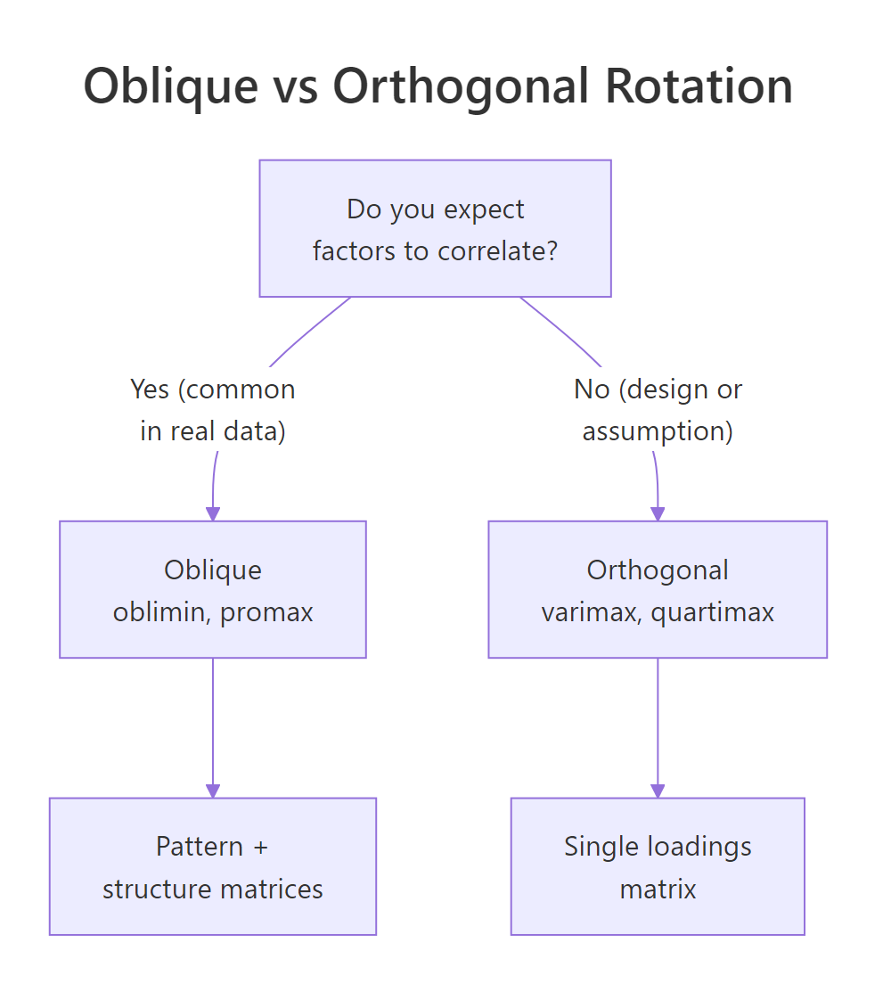
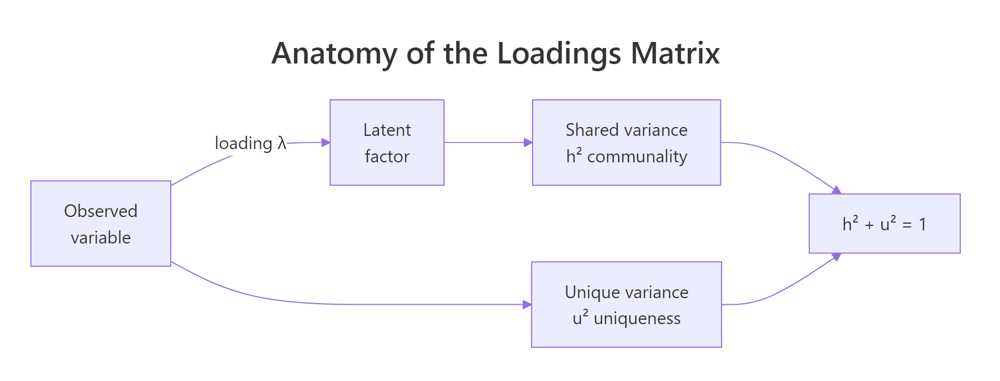
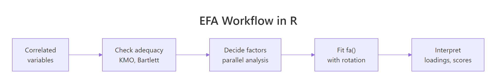

Exploratory Factor Analysis in R: Find Latent Constructs in Your Correlation Matrix
Exploratory factor analysis (EFA) looks at a correlation matrix and asks: what small set of hidden factors could explain all these overlapping correlations? You'll reach for it whenever 20 survey items seem to be measuring 3 things, or 15 economic indicators really track 2 underlying forces. The rest of this post walks the full EFA workflow in R, from adequacy checks to rotation choice to reading the loadings matrix, all runnable in your browser.
What is exploratory factor analysis, and when should you use it?
Picture a 25-item personality survey. Items like I make friends easily, I feel comfortable around people, and I don't talk a lot are correlated because they all tap one hidden trait, extraversion. EFA starts from that shared correlation and works backward to recover the trait. Before we formally extract anything, let's just look at five extraversion items from the classic bfi dataset and see the correlation structure with our own eyes.
The block below loads the psych package, pulls the five extraversion items, and prints their correlation matrix. Watch for off-diagonal values around 0.3 to 0.5, that shared overlap is what factor analysis will convert into a single number.
The absolute correlations are consistently 0.35 or larger, and the signs flip cleanly around items E1 and E2 (reverse-keyed). That's the visible shadow of one latent factor acting on five observed items. Without EFA you'd stare at 10 unique correlations; with EFA you can replace the block with a single extraversion score.
Try it: Pull the five neuroticism items (N1 to N5) from bfi and print their correlation matrix rounded to 2 decimals.
Click to reveal solution
Explanation: All five items correlate positively and substantially, the same pattern you'd expect if one factor (emotional instability) were pulling on all of them.
Is your data suitable for factor analysis?
Before extracting factors, you want to check that the correlation matrix has enough shared structure to support them. Two tests do this:
- Kaiser-Meyer-Olkin (KMO) measures sampling adequacy, the ratio of correlations to partial correlations. When KMO is high, variables share a lot of common variance. Values above 0.8 are "meritorious," 0.6 to 0.8 is acceptable, below 0.5 is unusable.
- Bartlett's test of sphericity tests whether the correlation matrix is different from an identity matrix (everything zero off-diagonal). A significant p-value (conventionally < 0.05) means your correlations aren't just noise.
Let's run both on the full 25-item Big Five block.
The overall MSA is 0.85, comfortably in the "meritorious" zone, and every single item's MSA is 0.74 or higher, so no individual item is pulling the aggregate down. Bartlett's test is overwhelmingly significant (chi-square = 18,146 on 300 df). Both signals say: green light, factor analysis will find real structure here.
Try it: Run KMO() on the numeric columns of mtcars. Given the dataset's mix of engineering variables, would you expect a high or low overall MSA?
Click to reveal solution
Explanation: Engine size, weight, horsepower, and fuel economy are heavily intercorrelated (they're all proxies for "how big and thirsty the engine is"), so MSA is high.
How many factors should you extract?
Deciding how many factors to keep is the biggest judgment call in EFA. Three common methods:
- Kaiser's rule: retain factors with eigenvalues > 1. Easy to compute, notorious for over-extracting.
- Scree plot: find the "elbow" where the eigenvalue curve flattens. Subjective.
- Parallel analysis: simulate random data with the same dimensions as yours, extract eigenvalues, and keep only the factors whose real eigenvalues exceed the random baseline. Principled and widely recommended.
The psych package runs all three in one command with fa.parallel(). The function prints a recommendation and draws a scree overlay in one shot.
Parallel analysis suggests six factors. The first four eigenvalues are comfortably above 1 (Kaiser would agree), but the fifth and sixth are below 1 yet still above the random baseline, so parallel analysis keeps them. This is exactly where Kaiser's rule and parallel analysis disagree, and it's the reason researchers prefer the latter.
The design of bfi targets five personality traits, so a six-factor solution hints at either a methodological artifact (reverse-scored items sometimes split off) or a meaningful sub-factor. We'll start with five factors to match theory and inspect the loadings.
Try it: Run fa.parallel() on just the five neuroticism items and read off the suggested number of factors.
Click to reveal solution
Explanation: All five items tap one construct, so exactly one factor emerges above the random baseline.
How do you fit the EFA model with fa()?
Now that parallel analysis suggests five factors, fit the model with psych::fa(). Three arguments matter most:
nfactors: the number you decided on.rotate: we'll start with"oblimin"(oblique), then compare to"varimax"(orthogonal) in the next section.fm: the estimation method."minres"(minimum residual) is the default and a sensible choice;"ml"(maximum likelihood) adds fit statistics if you need them.
Each column (MR1-MR5) is one factor; each row is one item. The top table shows the proportion of variance each factor explains after rotation (11%, 8%, 8%, 6%, 6%). The bottom table is the pattern matrix: loadings of the first four items across the five factors. Already you can see items A2, A3, A4 load strongly on MR5, hinting at the agreeableness factor.
fm = "minres" unless you need fit indices. Minimum-residual estimation is fast, stable, and works even when the correlation matrix is slightly non-positive-definite. Switch to fm = "ml" (maximum likelihood) only when you need TLI, RMSEA, or chi-square fit statistics for a paper or model comparison.Try it: Fit a three-factor oblimin solution on the same 25 items and compare the total variance explained to the five-factor model.
Click to reveal solution
Explanation: Only 20% of variance is captured with three factors vs. 39% with five. The lost 19% is real signal that deserved its own factor.
Oblique or orthogonal rotation, which should you pick?
After extraction, the raw factor axes are mathematically valid but rarely interpretable, items often load a bit on every factor. Rotation rewrites the axes so that each item loads strongly on one factor and weakly on the others (a property called simple structure). Two families:
- Orthogonal rotation (varimax, quartimax, equamax) keeps factors uncorrelated. Mathematically clean, but only honest if you truly believe the latent constructs are independent.
- Oblique rotation (oblimin, promax, geominQ) lets factors correlate. In survey data, social science, and economics, constructs usually do correlate, extraversion and agreeableness share some variance, so oblique is the realistic default.

Figure 1: Use oblique rotation when factors are likely correlated; use orthogonal rotation only when uncorrelated factors are theoretically required.
Let's fit the same five-factor model with varimax and compare.
The oblique fit reports a Phi matrix showing inter-factor correlations up to 0.25, nowhere near zero. If you forced those factors to be orthogonal (varimax), you'd be misrepresenting the data. Confirmation: mean item complexity is lower with oblique rotation (1.33 vs. 1.42), meaning each item loads more cleanly on a single factor. Oblique wins on both interpretability and honesty.
Try it: Fit a three-factor model with both varimax and oblimin rotations on bfi_items, then compare mean item complexity.
Click to reveal solution
Explanation: Oblimin produces a slightly simpler structure because it can lean on inter-factor correlations instead of forcing items to stretch across independent factors.
How do you read the loadings matrix?
The pattern matrix is where interpretation happens. For oblique solutions, each loading is a standardized partial regression coefficient: how much the factor predicts the item, holding the other factors fixed. Three rules of thumb:
- |loading| ≥ 0.40 is substantively meaningful (0.32 is a looser academic threshold).
- Cross-loadings (an item loading ≥ 0.30 on more than one factor) flag items that don't belong cleanly to any factor.
- Communality (
h2) is the proportion of an item's variance explained by the factors combined. Uniqueness (u2 = 1 - h2) is what's left over.

Figure 2: Each observed variable's variance splits into shared (communality h²) and unique (u²) components. The loadings quantify the shared part.
Let's print the sorted, thresholded loadings from the five-factor oblimin fit.
Every item loads meaningfully on exactly one factor, and the factors align with the Big Five: MR2 = Neuroticism, MR1 = Extraversion, MR3 = Conscientiousness, MR5 = Agreeableness, MR4 = Openness. Item A1 dropped below the 0.30 threshold on its expected factor, worth flagging for scale cleanup. The sign pattern on MR1 (E1, E2, E4 negative, E3, E5 positive) reflects reverse-keyed items.
print(obj$loadings, sort = TRUE, cutoff = 0.3) reorganizes items by dominant factor and hides weak loadings, turning a cluttered table into a readable one.Try it: Print the same loadings matrix with a stricter cutoff of 0.40. How many items drop out entirely?
Click to reveal solution
Explanation: A stricter threshold reveals which items are weakly connected to any factor and might need rewording or removal in scale development.
How do you compute and use factor scores?
A factor score is each respondent's position on a latent factor, essentially a weighted composite of the items they answered. Scores let you use the extracted factors as variables in downstream analysis: regression predictors, clustering input, group-difference tests.
Request scores with the scores argument; "regression" is the most common estimator.
Each row of fs is one respondent, each column one factor; scores are standardized (mean ≈ 0, SD ≈ 1). The score.cor matrix shows how correlated the estimated scores are, closely tracking the Phi matrix from the model but never identical because regression scores carry indeterminacy.
$R2.scores) alongside downstream results.Try it: Correlate the first six rows of fs (treat them like a mini-dataset) and round to 2 decimals.
Click to reveal solution
Explanation: Six rows is too few to stabilize correlations, the values swing around the true population correlations shown in score.cor. Use at least 100 respondents for stable downstream models.
Practice Exercises
These combine multiple steps of the workflow. Use distinct variable names (my_*) so they don't overwrite tutorial state.
Exercise 1: Run a full EFA on mtcars
Subset mtcars to its numeric columns, run KMO(), use fa.parallel() to pick a factor count, then fit an oblimin EFA with that many factors. Save the fitted model to my_efa.
Click to reveal solution
Explanation: The two factors separate "engine displacement/mass" from "drivetrain style," a satisfying decomposition of mtcars.
Exercise 2: Pick the better rotation
Fit a three-factor model on bfi_items with varimax and with oblimin. Report mean item complexity for each. Save the model with the lower complexity to my_rot_choice.
Click to reveal solution
Explanation: Oblimin's lower complexity (1.66 vs 1.79) confirms it captures simpler structure because it lets the underlying Big Five factors correlate.
Exercise 3: Predict gender from factor scores
Using the scores from the five-factor oblimin fit (efa_scored$scores), fit a logistic regression predicting bfi$gender (1 = male, 2 = female). Save to my_gender_glm and report which factors have p-values < 0.05.
Click to reveal solution
Explanation: Neuroticism, agreeableness, and openness show significant gender differences in this sample, matching the published Big Five literature.
Complete Example: one end-to-end EFA in six commands
If you remember nothing else, remember these six lines. They take you from raw items to ready-to-use factor scores.
One pass, no guesswork: check adequacy, let parallel analysis pick the factor count, fit the oblique model, and walk away with fs_final ready to plug into lm(), glm(), or kmeans().
Summary

Figure 3: The canonical EFA workflow: check adequacy, pick factor count with parallel analysis, fit fa(), choose rotation, interpret loadings and scores.
| Step | Function | Decision rule | Red flag |
|---|---|---|---|
| Adequacy | KMO(), cortest.bartlett() |
Overall MSA ≥ 0.6, Bartlett p < 0.05 | Any item MSA < 0.5 |
| Factor count | fa.parallel(x, fa = "fa") |
Use $nfact |
Big gap vs. theory, investigate |
| Fit | fa(x, nfactors, fm = "minres") |
minres default; ml if you need fit stats | Heywood cases (communality > 1) |
| Rotate | rotate = "oblimin" (or "varimax") |
Oblique if factors may correlate | Ignoring non-zero $Phi |
| Interpret | print(loadings, cutoff = 0.4, sort = TRUE) |
Each item loads on one factor | Strong cross-loadings |
| Score | fa(..., scores = "regression") |
Check $R2.scores |
Low R² means noisy scores |
References
- Revelle, W. (2024). psych: Procedures for Psychological, Psychometric, and Personality Research. R package. Link
- Fabrigar, L., Wegener, D., MacCallum, R., & Strahan, E. (1999). Evaluating the use of exploratory factor analysis in psychological research. Psychological Methods, 4(3), 272-299. Link
- Costello, A. B., & Osborne, J. W. (2005). Best practices in exploratory factor analysis. Practical Assessment, Research, and Evaluation, 10(7). Link
- Horn, J. L. (1965). A rationale and test for the number of factors in factor analysis. Psychometrika, 30(2), 179-185. Link
- Kaiser, H. F. (1974). An index of factorial simplicity. Psychometrika, 39(1), 31-36. Link
- Revelle, W., & Rocklin, T. (1979). Very simple structure: An alternative procedure for estimating the optimal number of interpretable factors. Multivariate Behavioral Research, 14(4), 403-414. Link
- Yong, A. G., & Pearce, S. (2013). A beginner's guide to factor analysis. Tutorials in Quantitative Methods for Psychology, 9(2), 79-94. Link
Continue Learning
- PCA in R, the sister method; when PCA is preferred over EFA and how their math differs.
- Interpreting PCA Output, a companion walkthrough for reading loadings without rotation.
- Correlation in R, every EFA starts from a correlation matrix; master the inputs before analyzing the outputs.